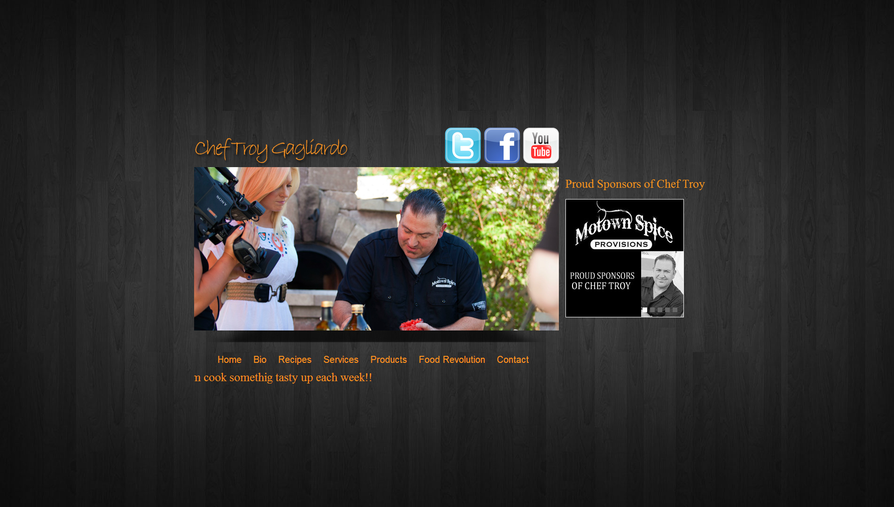
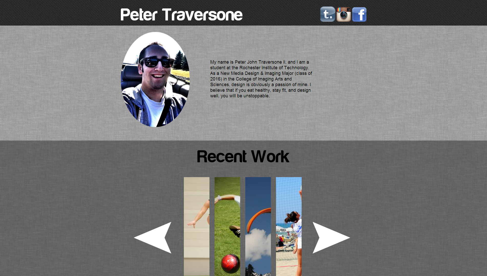
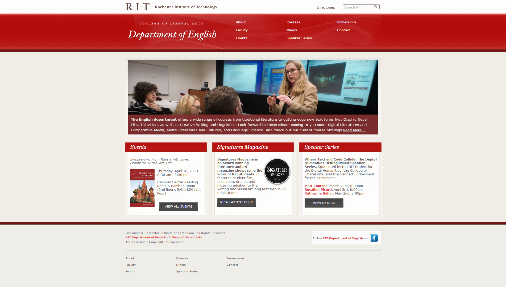
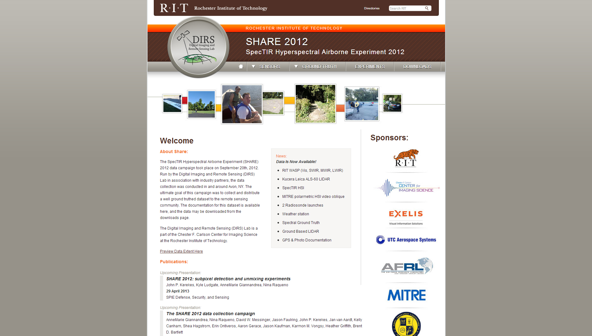
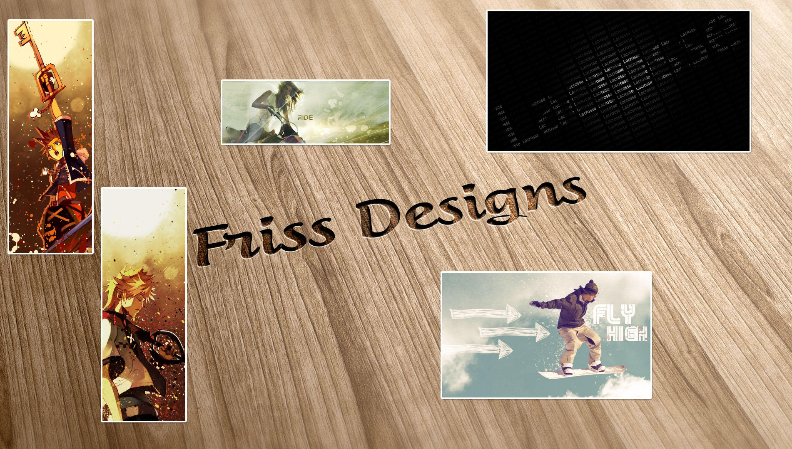

My Work
-

Website for Chef Troy Gagliardo - http://cheftroy.net
-

Website for Peter Traversone - http://PeterTraversone.com
-

RIT Department of English Website - http://rit.edu/english
-

RIT SHARE 2012 Data - http://rit.edu/share2012
-

Custom Content Management System
-

US Prep Athletes Website
- 